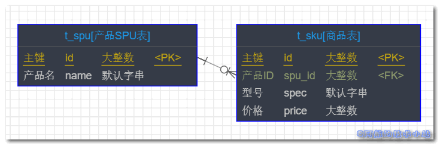
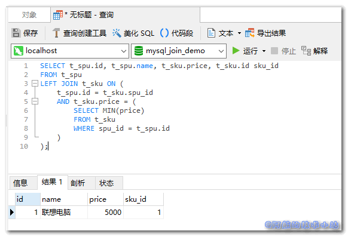
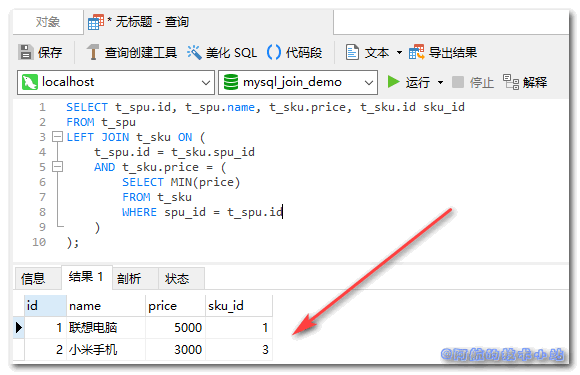

这次阿航在开发后端接口, 写复杂SQL查询时碰到了这个问题, 我需要将MySQL的JOIN关键字和MIN()同时使用. 本篇文章就来记录下MySQL JOIN MIN()/MAX()的组合使用.
应用场景
大家都有过淘宝网购的经历, 应该记得在搜索时, 出来的结果列表都是每个产品的最小价格. 点进去后, 选择不同的型号会有相应的价格.
阿航碰到的是我有两个表, 一个是SPU(产品表), 一个是SKU(商品表), 它们是一对多的关系(因为一款产品会有多个型号). 我需要在查询SPU的同时, 再把对应的最便宜的SKU的价格进行返回.
总结: 一对多关联查询, 并且把多的表的最大/最小值返回.
实战开始
[epcl_box type=“information”]为了方便大家理解, 阿航在这里进行相应的简化[/epcl_box]
数据关系
先来看下两个表的关系:

其中, 一个SPU对应多个SKU ( 比如一件衣服有多个颜色 ).
💡 解析
初始化数据库
进入数据库, 运行以下SQL语句定义并初始化数据表:
CREATE DATABASE mysql_join_demo DEFAULT CHARACTER
SET = 'utf8mb4';
USE mysql_join_demo;
CREATE TABLE t_spu(
id BIGINT NOT NULL AUTO_INCREMENT COMMENT '主键',
name VARCHAR(32) NOT NULL COMMENT '产品名',
PRIMARY KEY (id)
) COMMENT = '产品SPU表';
CREATE TABLE t_sku(
id BIGINT NOT NULL AUTO_INCREMENT COMMENT '主键',
spu_id BIGINT NOT NULL COMMENT '产品ID',
spec VARCHAR(32) NOT NULL COMMENT '型号',
price BIGINT NOT NULL COMMENT '价格',
PRIMARY KEY (id)
) COMMENT = '商品表';
INSERT INTO `mysql_join_demo`.`t_spu`(`id`, `name`) VALUES (1, '联想电脑');
INSERT INTO `mysql_join_demo`.`t_sku`(`id`, `spu_id`, `spec`, `price`) VALUES (1, 1, '低配版', 5000);
INSERT INTO `mysql_join_demo`.`t_sku`(`id`, `spu_id`, `spec`, `price`) VALUES (2, 1, '高配版', 8000);
运行完成后, 表的数据结构应该为:
t_spu(产品表):
| id | name |
|---|---|
| 1 | 联想电脑 |
t_sku(商品表)
| id | spu_id | spec | price |
|---|---|---|---|
| 1 | 1 | 低配版 | 5000 |
| 2 | 1 | 高配版 | 8000 |
速度快的同学应该发现了, 我们的"联想电脑"分别对应两个型号, 分别为"低配版"以及"高配版"!
💡 数据库结构解析
定义查询 SQL
我们的目标, 就是一次查询查到"联想电脑"对应的最便宜的一款型号价格!
查询语句:
SELECT t_spu.id, t_spu.name, t_sku.price, t_sku.id sku_id
FROM t_spu
LEFT JOIN t_sku ON (
t_spu.id = t_sku.spu_id
AND t_sku.price = (
SELECT MIN(price)
FROM t_sku
WHERE spu_id = t_spu.id
)
);
🟢运行, 查看结果:

[epcl_box type=“success”]我们成功的查询到了每个产品对应的最便宜商品![/epcl_box]
更多数据
如果想要查看更多产品的效果, 可以添加数据:
INSERT INTO `mysql_join_demo`.`t_spu`(`id`, `name`) VALUES (2, '小米手机');
INSERT INTO `mysql_join_demo`.`t_sku`(`id`, `spu_id`, `spec`, `price`) VALUES (3, 2, '小米6', 3000);
INSERT INTO `mysql_join_demo`.`t_sku`(`id`, `spu_id`, `spec`, `price`) VALUES (4, 2, '小米8', 4000);
INSERT INTO `mysql_join_demo`.`t_sku`(`id`, `spu_id`, `spec`, `price`) VALUES (5, 3, '小米10', 4500);
🟢运行, 仍然成功:

核心代码
SELECT 父表.id, 父表.name, 子表.price
FROM 父表
LEFT JOIN 子表 ON (
父表.id = 子表.spu_id
AND 子表.price = (
SELECT MIN(price)
FROM 子表
WHERE spu_id = 父表.id
)
);
其中,
price为需要进行MIN()或MAX()操作的子表字段